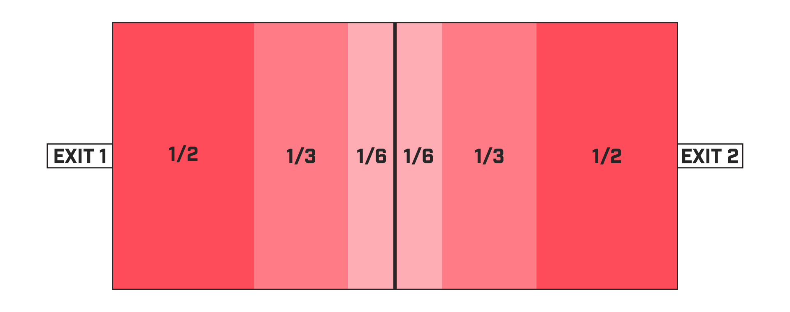
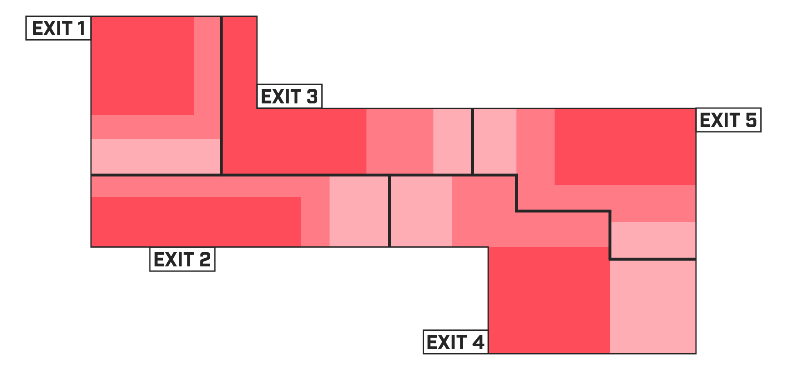
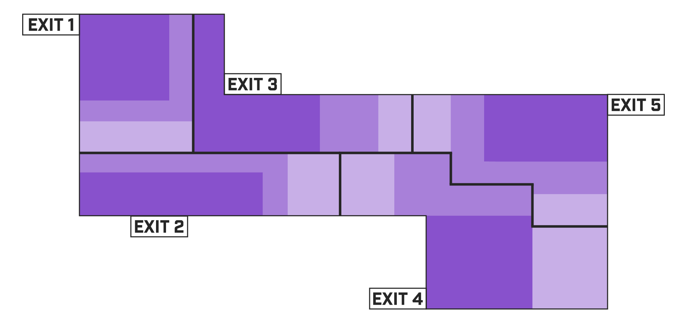
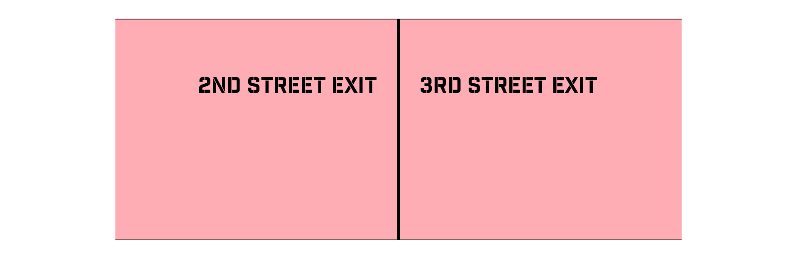
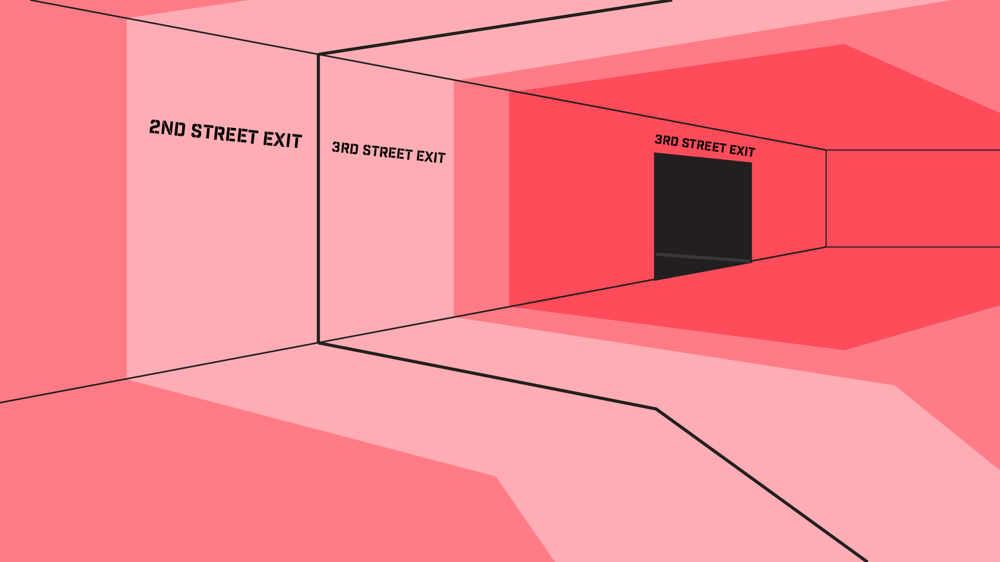

Designed the Voronoi Parking Garage, a system that assists people with finding the best available parking space for their needs.
Dates: January 2017 - February 2017
Team: Scott Dombkowski
Parking garages can be both an overwhelming and underwhelming experience. One second you are surrounded by a dark concrete expanse with little to no engaging objects, the next you could be surprised by a car suddenly backing out of a space or a car making a wide turn into your lane or around a blind corner. Parking garages are also typically unfamiliar spaces for drivers, making it hard for drivers to effectively and safely navigate them. These qualities and others make parking garages a fertile ground for improvement.
Defining the Problem
After some primary and secondary research, I developed a few key takeaways: drivers have no way of knowing if they are parking in a good spot for their circumstances, drivers have no way of knowing if they are best navigating the parking garage for their circumstances, and parking garages are currently lacking effective signifiers that direct drivers in their search for a parking space.
Developing a Goal
With these takeaways in mind, I created the following goal for myself: design a control that assists people with finding the best available parking space for their situation in the best possible way (no stress, efficient, comfortable, etc...).
Initial Solution
I initially explored a variety of different types of systems including auditory, olfactory, and visual. I eventually settled on a control set in the future. This control would utilize radar/camera technology to direct individuals to the best spot for their circumstances. Their circumstances would be gathered from some sort of input or the “Internet of Things.” Drivers would enter the garage and be directed through a lighting system (directional arrows on the ceiling and a solid line on the floor) to their best spot.

Initial Solution Sketch
A number of considerations were made when designing this system. For instance, I decided to place the arrows on the ceiling and the solid line on the floor to replicate a game, hopefully leading to more path compliance.
Multiple considerations were made to factor in the speed of cars and traffic within a garage. These considerations led to a number of rules being established. For instance, without traffic arrows would be 4.5 seconds in front of you (approx. 22.5 meters) and lines would be 6 seconds in front of you (approx. 30 meters). In traffic, arrows could be no closer than 4m to the arrows belonging to the car in front and behind, while the solid line on the floor would go to the car in front’s bumper. Considerations were also made for when a driver did not follow their set path. If this would have occurred, that individual’s path would turn yellow while the system recalibrated once the system recalibrated their path would turn green and direct them to the best parking space based on their new path. If that person took someone else’s parking spot, that person’s path would remain green until it was recalibrated giving off the sense that nothing had changed and that they were in good hands.
Restrictions
I found my initial design to be prescriptive and a bit too obvious. To combat this I instituted some restrictions for myself. I decided to create something that was possible today, something that was possible in the current parking garage infrastructure, and something that was more passive than active. I went back to the drawing board with these restrictions in mind.
Final Solution
With the restrictions I had created for myself, I went back to sketching and developing potential solutions. One of these solutions that I was particularly excited about utilized painted “radar circles” to visualize the best parking spots.

Final Solution Sketch

Final Solution Sketch
What exactly do I mean by radar circles? Radar circles are circles centered on an exit. Each circle has a stroke on its circumference and an outward gradient that decreases in saturation. After some research into parking lot design and discovering that 300 feet is the max businesses want customers to walk to enter their business to enter your storefront, I decided to implement a 300 foot radius for these circles. I confronted some difficulty in regards to how radar circles would overlap and how the two circles could be represented as distinct of each other while still overlapping.
While sharing this concept with one of my peers, I was directed to Voronoi diagrams. Voronoi diagrams go way back, the first documented use of them was by Descartes back in the 1600’s. Voronoi diagrams allow for the “partitioning of a plane into regions based on a distance to points in a specific subset of the plane” this “creates regions that consist of all points closer to that than to any other.”
After looking into Voronoi diagrams, I decided to replace radar circles with Voronoi diagrams. By doing this I created distinct regions of areas that are closest to specific parking garage exits. I then divided those areas into smaller areas, because not all parking spots are equivalent within that region. The closest parking spots are painted in the highest saturated shade of the selected color, while the furthest parking spots are painted in the least saturated shade of the selected color. The color is not only seen on the floor, but is replicated on the ceiling to create an encompassing experience. Each level of the parking garage would be painted in an unique color to allow for better recognition by drivers. Region dividers would be created to distinguish the end of one region and the start of another. This would be done through a solid stroke and labeling.

Voronoi Floor Regions (Higher Saturated Color = Closest Spots In Region, 2 Exits)

Voronoi Parking Garage Floor Regions (5 Exits On A Floor)

Different Floors Have Different Colors

Region Dividers

Voronoi Parking Garage Render
Additional elements were created to align with the diagrams including a key (helping people understand the system, more saturated color = closer parking spot, less saturated color = further parking spot), exit lines painted on the floor (the Voronoi Parking garage does not utilize any obtrusive signage that is not part of the existing environment), and directional signage.
I ultimately believe that the Voronoi parking garage assists people with finding the best available parking space and makes parking garages a bit more enjoyable. While there is room for improvement, the Voronoi parking garage would provide a significant advance in individuals’ parking garage experiences.